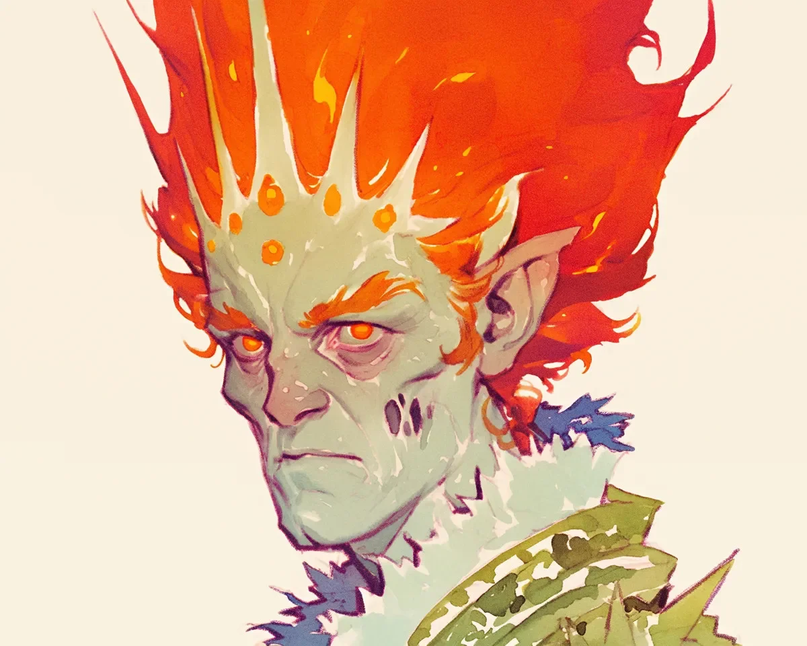

버트람의 손가락 사이로 왕관이 쉿 소리를 냈고, 살아있는 불꽃이 그가 일곱 번째 뾰족한 부분을 닦는 동안 그의 손마디를 핥았다. 열일곱 개의 차원을 넘나들며 삼백 년간 봉사한 경험으로 그는 정확한 압력을 알고 있었다—우주의 얼룩을 닦아내기에 충분히 단단하게, 그러나 3도 화상을 피할 만큼 부드럽게. 오직 왼쪽 눈썹만이, 오른쪽보다 짧은 그것만이 오늘 일찍 있었던 계산 실수를 드러냈다.
[The crown hissed between Bertram’s fingers, its living flames licking at his knuckles as he polished the seventh point. Three centuries of service across seventeen planes had taught him the precise pressure needed—firm enough to buff away cosmic tarnish, gentle enough to avoid third-degree burns. Only his left eyebrow, shorter than its twin, betrayed today’s earlier miscalculation.]
카디아 경의 모습이 흑요석 벽에 비쳐 일렁였고, 그의 불꽃 머리카락은 평소보다 더 강렬하게 맥동했다. 그림자들이 불안한 신하들처럼 방 안을 춤추며 돌아다녔다. 버트람은 그 리듬을 알아차렸다—신의 동요, 문제의 전조.
[Lord Kadia’s reflection wavered in the obsidian walls, his flame-hair pulsing with unusual intensity. Shadows danced across the chamber like anxious courtiers. Bertram recognized the rhythm—divine agitation, the prelude to trouble.]
“저기, 버트람.” 카디아 경의 용암 같은 주황색 눈이 화산의 틈처럼 좁아졌다. “우주의 구체들이 오늘… 이상하게 들리는군. 마치 가장 높은 현이 빠진 하프 같아.”
[“I say, Bertram.” Lord Kadia’s molten-orange eyes narrowed to volcanic slits. “The Cosmic Spheres sound… wrong today. Like a harp missing its highest string.”]
버트람은 수학적 정확성으로 왕관을 공중에 떠 있는 받침대 위에 올려놓았다. 그 동작은 영겁의 세월 동안 연습된 것이었다. 그의 하얀 장갑은 왕관이 지속적으로 불씨 조각을 흘리는데도 불구하고 믿을 수 없을 정도로 깨끗했다.
[Bertram placed the crown on its hovering pedestal with mathematical precision, the motion practiced across eons. His white gloves remained impossibly pristine despite the crown’s persistent shedding of ember-flakes.]
“천체 연감에 따르면 방해가 있습니다, 주인님. 왕관의 수집가가 청록색 차원에 들어섰습니다.” 버트람은 이 종말론적인 소식을 마치 저녁 식사가 약간 지연될 것이라고 알리는 것과 같은 어조로 전달했다. “그의 궤적으로 보아 우리가 다음인 것 같습니다.”
[“The Astral Almanac indicates a disturbance, my lord. The Collector of Crowns has entered the Cerulean Dimension.” Bertram delivered this apocalyptic news with the same inflection he might announce a slight delay in dinner service. “His trajectory suggests we are next.”]
카디아 경의 머리카락이 하얗게 달아올랐다. 근처에 있던 태피스트리—제3차 원소 전쟁의 유일하게 살아남은 묘사—가 검게 변하고, 말려 올라가더니, 역사적인 연기 한 줄기로 사라졌다.
[Lord Kadia’s hair flared white-hot. A nearby tapestry—the only surviving depiction of the Third Elemental War—blackened, curled, and vanished in a wisp of historical smoke.]
“그 차원을 넘나드는 도둑놈!” 카디아는 바닥을 쿵쿵 밟으며 걸었고, 발걸음마다 돌바닥에 그의 우주적 인장의 완벽한 자국을 남겼다. “차원 간 레가타가 내일 시작돼. 바다의 군주들이 이미 도착했어, 그들의 액체 형태가 그 우스꽝스러운 증발 방지 수트에 겨우 담겨 있지.”
[“That dimension-hopping thief!” Kadia stomped across the floor, each footfall branding the stone with a perfect imprint of his cosmic sigil. “The Interdimensional Regatta begins tomorrow. The Sea Lords have already arrived, their liquid forms barely contained in those ridiculous evaporation-proof suits.”]
버트람은 자신이 발명한 용액—양자 확률로 희석된 불사조의 눈물—이 담긴 분무기를 꺼내어 조용히 연기 나는 발자국에 뿌렸다.
[Bertram produced a spritzer bottle filled with a solution of his own invention—phoenix tears cut with quantum probability—and discreetly misted the smoldering footprints.]
“제안을 드려도 될까요, 주인님.” 버트람은 차원 옷장으로 이동했다. 이 가구는 동시에 열네 개의 현실에 존재하면서도 어쩐지 카디아 경의 겨울 망토를 넣을 공간은 항상 부족했다. “수집가의 방식은 어떤… 연극적인 예측 가능성을 드러냅니다.”
[“If I might suggest, my lord.” Bertram moved to the dimensional wardrobe, a furniture piece that existed simultaneously in fourteen realities yet somehow never had enough room for Lord Kadia’s winter cloaks. “The Collector’s methods betray a certain… theatrical predictability.”]
그는 결정화된 별빛으로 만든 정장을 선택했다. 그 천은 먼 별들의 탄생과 죽음으로 물결치고 있었다. 카디아 경이 신성 대신 회계사를 선택했던 붕괴된 타임라인에서 만들어진 커프링크가 그 앙상블을 완성했다.
[He selected a suit of crystallized starlight, its fabric rippling with the birth and death of distant suns. The cufflinks—forged from a collapsed timeline where Lord Kadia had chosen accountancy over godhood—completed the ensemble.]
“수집가는 위협이 곧 힘이라고 믿습니다. 이런 가정이 취약점을 만들어냅니다.”
[“The Collector believes intimidation is power. This assumption creates a vulnerability.”]
수집가는 오후 차 시간에 물질화했다. 그의 타이밍은 버트람에게 그 존재의 정식 소개 부재만큼이나 무례했다. 그 존재는 역설-도자기와 차원 간 페이스트리의 섬세한 배열 위로 솟아올랐고, 그의 형태는 도둑맞은 현실들이 소용돌이치는 모습이었다.
[The Collector materialized during afternoon tea, his timing as offensive to Bertram as the entity’s lack of formal introduction. The being loomed above the delicate arrangement of paradox-china and interdimensional pastries, his form a churning vortex of stolen realities.]
“카디아 브라이트플레임 경.” 수집가의 목소리는 일곱 개의 소멸된 차원들의 죽음의 숨소리로 울려 퍼졌다. “당신의 왕관이 내 컬렉션에 합류할 것이다. 당신의 영역이 내 굶주림을 채울 것이다. 당신의 저항은—”
[“Lord Kadia Brightflame.” The Collector’s voice echoed with the death-rattles of seven extinguished dimensions. “Your crown shall join my collection. Your realm shall feed my hunger. Your resistance shall—”]
“차 한잔 드시겠습니까?” 버트람이 결정화된 역설로 만든 주전자를 들어올리며 끼어들었다. “다즐링입니다, 레몬이 살짝 들어간. 아니면 좀 더 강한 것을 원하시나요? 초신성 빈티지의 꽤 훌륭한 증류주가 있습니다.”
[“Would you care for tea?” Bertram interrupted, lifting the pot crafted from crystallized paradox. “Darjeeling, with a whisper of lemon. Or perhaps something stronger? We have a rather excellent distillation of supernova vintage.”]
수집가는 멈췄다, 일상적인 환대에 우주적 독백이 방해받았다. 카디아의 왕관을 향해 뻗어 있던 그의 공허-촉수들이 망설였다.
[The Collector paused, cosmic monologue disrupted by mundane hospitality. His void-tendrils, already reaching for Kadia’s crown, hesitated.]
“차는 약하고 일시적인 존재들을 위한 것이다,” 수집가가 우르릉거렸지만, 그의 시선은 버트람이 지금 내미는 김이 모락모락 나는 컵에 고정되었다.
[“Tea is for the weak and temporal,” the Collector rumbled, but his gaze fixed on the steaming cup Bertram now extended.]
“아마도요,” 버트람이 동의했다, “하지만 이 특별한 블렌드는 세 가지 시간 상태에 동시에 존재합니다. 감히 말씀드리자면, 당신과 꽤 비슷하죠.”
[“Perhaps,” Bertram agreed, “but this particular blend exists in three time states simultaneously. Rather like yourself, if I may be so bold.”]
수집가의 호기심—여러 현실에서 항상 그의 몰락이었던—이 그를 앞으로 나아가게 했다. 공허한 손가락들이 역설적인 도자기 컵을 감쌌다.
[The Collector’s curiosity—always his downfall across multiple realities—compelled him forward. Void-fingers wrapped around the paradox-china cup.]
시간이 더듬거렸다.
[Time stuttered.]
수집가는 거의-하지만-결코-완전히 홀짝이지 않는 끝없는 루프에 얼어붙었고, 그의 표정은 분노와 당혹감 사이를 오갔다. 시간 함정—버트람이 지금은 잊혀진 타임 로드와 함께 일했던 이전 고용에서 만든 것—이 완벽하게 작동했다.
[The Collector froze in an endless loop of almost-but-never-quite sipping, his expression cycling between rage and bewilderment. The temporal trap—Bertram’s creation from a previous employment with a now-forgotten Time Lord—performed flawlessly.]
카디아 경은 커프링크를 조정했고, 그 안에 있는 붕괴된 타임라인이 역설적인 도자기와 공명했다. “훌륭하게 처리했소, 버트람. 비록 차원 간 당국이 서류 작업 때문에 꽤 화가 날 것 같긴 하지만.”
[Lord Kadia adjusted his cufflinks, the collapsed timeline within them resonating with the paradox-china. “Masterfully handled, Bertram. Though I suspect the Interdimensional Authorities will be rather put out about the paperwork.”]
버트람은 초신성 빈티지를 따를 정확한 순간을 머릿속으로 계산하며 아주 미세한 미소를 지었다. 그 병은 이 특정 우주의 탄생 이후로 숙성되어 왔다—특별한 자리에 어울리는 것 같았다.
[Bertram permitted himself the faintest smile as he mentally calculated the precise moment to decant the supernova vintage. The bottle had been aging since the birth of this particular universe—a special occasion seemed appropriate now.]
“그렇습니다, 주인님. 레가타 리셉션을 위해 정식 식당을 준비할까요, 아니면 일광실을 선호하시나요? 바다의 군주들은 현실-얇은 유리를 통해 두 달이 뜨는 것을 보는 것을 무척 즐깁니다.”
[“Indeed, my lord. Shall I prepare the formal dining room for the Regatta reception, or would you prefer the solarium? The Sea Lords do so enjoy watching the dual moonrise through the reality-thin glass.”]
수집가는 시간 자체와의 침묵의 싸움을 계속했고, 카디아 경의 웅장한 홀에서 특이한 대화 소재 이상의 의미를 갖지 못했다—적절한 서비스와 적시에 제공된 차 한 잔으로도 우주적 위협이 무력화될 수 있다는 증거였다.
[The Collector continued his silent struggle against time itself, becoming little more than an unusual conversation piece in Lord Kadia’s grand hall—proof that even cosmic threats could be neutralized with proper service and a well-timed cup of tea.]